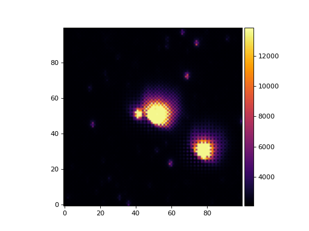
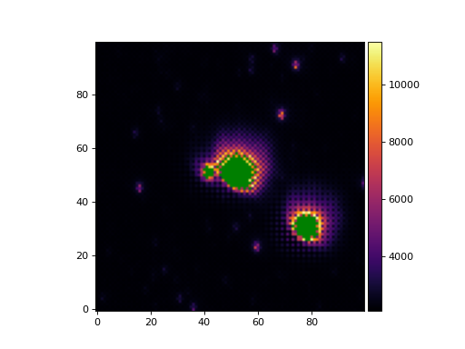
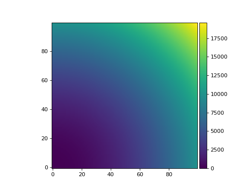
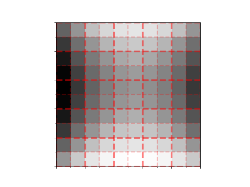

panoptes.utils.images package¶
Submodules¶
panoptes.utils.images.apertures module¶
- panoptes.utils.images.apertures.get_rectangle_aperture(stamp_size: tuple[int, int], annulus_width: int = 2)[source]¶
Gets a square aperture.
- panoptes.utils.images.apertures.get_rgb_sigma_clip_aperture(data: ArrayLike, sigma: int = 2, **kwargs)[source]¶
Make a sigma clipped aperture for each of the RGB channels.
- Parameters:
- Returns:
The aperture mask.
- Return type:
npt.ArrayLike
- panoptes.utils.images.apertures.make_location_aperture(x: ArrayLike, y: ArrayLike, aperture_size: tuple[int, int] = (10, 10), dilation_iterations: int = 1)[source]¶
Make dilated apertures from the given x and y coordinate locations.
The x and y arrays can come from any source. Using PIPELINE metadata the mean WCS catalog positions can be used like:
x_locs = (dataframe.catalog_wcs_x_int - dataframe.stamp_x_min).values y_locs = (dataframe.catalog_wcs_y_int - dataframe.stamp_y_min).values make_location_aperture(x_locs, y_locs, (10, 10))
- Parameters:
- Returns:
The aperture mask.
- Return type:
npt.ArrayLike
panoptes.utils.images.bayer module¶
- class panoptes.utils.images.bayer.RGB(*values)[source]¶
Bases:
IntEnumHelper class for array index access.
- B = 2¶
- BLUE = 2¶
- G = 1¶
- G1 = 1¶
- GREEN = 1¶
- R = 0¶
- RED = 0¶
- panoptes.utils.images.bayer.get_pixel_color(x: int, y: int) str[source]¶
Given a zero-indexed x,y position, return the corresponding color.
Note
See
get_rgb_data()for a description of the RGGB pattern.- Returns:
one of ‘R’, ‘G1’, ‘G2’, ‘B’
- Return type:
- panoptes.utils.images.bayer.get_rgb_background(data: ndarray, box_size: tuple[int, int] = (79, 84), filter_size: tuple[int, int] = (11, 11), estimator: str = 'mmm', interpolator: str = 'zoom', sigma: int = 5, iters: int = 10, exclude_percentile: int = 100, return_separate: bool = False, *args, **kwargs) ndarray | list[source]¶
Get the background for each color channel.
Note: This funtion does not perform any additional calibration, such as flat, bias, or dark correction. It is expected you have performed any necessary pre-processing to data before passing to this function.
By default this uses a box size of (79, 84), which gives an integer number of boxes. The size of the median filter box for the low resolution background is on the order of the stamp size.
Most of the options are described in the photutils.background.Background2D page: https://photutils.readthedocs.io/en/stable/background.html#d-background-and-noise-estimation
>>> from panoptes.utils.images.bayer import RGB >>> from panoptes.utils.images import fits as fits_utils >>> # Get our data and pre-process (basic bias subtract here). >>> fits_fn = getfixture('solved_fits_file') >>> camera_bias = 2048 >>> data = fits_utils.getdata(fits_fn).astype(float) - camera_bias
>> The default is to return a single array for the background. >>> rgb_back = get_rgb_background(data) >>> float(rgb_back.mean()) 136… >>> float(rgb_back.std()) 36…
>>> # Can also return the Background2D objects, which is the input to save_rgb_bg_fits >>> rgb_backs = get_rgb_background(data, return_separate=True) >>> print(rgb_backs[RGB.RED]) <photutils.background.background_2d.Background2D>...
>>> {color.name:int(rgb_back[color].mean()) for color in RGB} {'RED': 145, 'GREEN': 127, 'BLUE': 145}
- Parameters:
data (np.array) – The data to use if no fits_fn is provided.
box_size (tuple, optional) – The box size over which to compute the 2D-Background, default (79, 84).
filter_size (tuple, optional) – The filter size for determining the median, default (11, 12).
estimator (str, optional) – The estimator object to use, default ‘mmm’.
interpolator (str, optional) – The interpolater object to user, default ‘zoom’.
sigma (int, optional) – The sigma on which to filter values, default 5.
iters (int, optional) – The number of iterations to sigma filter, default 10.
exclude_percentile (int, optional) – The percentage of the data (per channel) that can be masked, default 100 (i.e. all).
return_separate (bool, optional) – If the function should return a separate array for color channel, default False.
*args – Description
**kwargs – Description
- Returns:
- Either a single numpy array representing the entire
background, or a list of masked numpy arrays in RGB order. The background for each channel has full interploation across all pixels, but the mask covers them.
- Return type:
`numpy.array`|list(Background2D)
- panoptes.utils.images.bayer.get_rgb_data(data: ndarray, separate_green: bool = False) ndarray[source]¶
Get the data split into separate channels for RGB.
data can be a 2D (W x H) or 3D (N x W x H) array where W=width and H=height of the data, with N=number of frames.
The return array will be a 3 x W x H or 3 x N x W x H array.
The Bayer array defines a superpixel as a collection of 4 pixels set in a square grid:
R G G B
ds9 and other image viewers define the coordinate axis from the lower left corner of the image, which is how a traditional x-y plane is defined and how most images would expect to look when viewed. This means that the (0, 0) coordinate position will be in the lower left corner of the image.
When the data is loaded into a numpy array the data is flipped on the vertical axis in order to maintain the same indexing/slicing features. This means the the
(0, 0)coordinate position is in the upper-left corner of the array when output. When plotting this array one can use theorigin='lower'option to view the array as would be expected in a normal image although this does not change the actual index.Image dimensions:
---------------------------- x | width | i | columns | 5208 y | height | j | rows | 3476
Bayer pattern as seen in ds9:
x / j 0 1 2 3 ... 5204 5205 5206 5207 -------------------------------------------- 3475 | R G1 R G1 R G1 R G1 3474 | G2 B G2 B G2 B G2 B 3473 | R G1 R G1 R G1 R G1 3472 | G2 B G2 B G2 B G2 B . | y / i . | . | 3 | R G1 R G1 R G1 R G1 2 | G2 B G2 B G2 B G2 B 1 | R G1 R G1 R G1 R G1 0 | G2 B G2 B G2 B G2 B
The RGGB super-pixels thus start in the upper-left.
Bayer pattern as seen in a numpy array:
x / j 0 1 2 3 ... 5204 5205 5206 5207 -------------------------------------------- 0 | G2 B G2 B G2 B G2 B 1 | R G1 R G1 R G1 R G1 2 | G2 B G2 B G2 B G2 B 3 | R G1 R G1 R G1 R G1 . | y / i . | . | 3472 | G2 B G2 B G2 B G2 B 3473 | R G1 R G1 R G1 R G1 3474 | G2 B G2 B G2 B G2 B 3475 | R G1 R G1 R G1 R G1
Here the RGGB super-pixels are flipped upside down.
In both cases the data is in the following format:
| row (y) | col (x) --------------| ------ R | odd i, | even j G1 | odd i, | odd j G2 | even i, | even j B | even i, | odd j
And a mask can therefore be generated as:
bayer[1::2, 0::2] = 1 # Red bayer[1::2, 1::2] = 1 # Green bayer[0::2, 0::2] = 1 # Green bayer[0::2, 1::2] = 1 # Blue
- panoptes.utils.images.bayer.get_rgb_masks(data: ndarray, separate_green: bool = False) ndarray[source]¶
Get the RGGB Bayer pattern for the given data.
Note
See
get_rgb_data()for a description of the RGGB pattern.
- panoptes.utils.images.bayer.get_stamp_slice(x: int, y: int, stamp_size: tuple[int, int] = (14, 14), ignore_superpixel: bool = False, as_slices: bool = True) tuple[slice, slice] | tuple[int, int, int, int][source]¶
Get the slice around a given position with fixed Bayer pattern.
Given an x,y pixel position, get the slice object for a stamp of a given size but make sure the first position corresponds to a red-pixel. This means that x,y will not necessarily be at the center of the resulting stamp.
>>> from panoptes.utils.images import bayer >>> # Make a super-pixel as represented in numpy (see full stamp below). >>> superpixel = np.array(['G2', 'B', 'R', 'G1']).reshape(2, 2) >>> superpixel array([['G2', 'B'], ['R', 'G1']], dtype='<U2') >>> # Tile it into a 5x5 grid of super-pixels, i.e. a 10x10 stamp. >>> stamp0 = np.tile(superpixel, (5, 5)) >>> stamp0 array([['G2', 'B', 'G2', 'B', 'G2', 'B', 'G2', 'B', 'G2', 'B'], ['R', 'G1', 'R', 'G1', 'R', 'G1', 'R', 'G1', 'R', 'G1'], ['G2', 'B', 'G2', 'B', 'G2', 'B', 'G2', 'B', 'G2', 'B'], ['R', 'G1', 'R', 'G1', 'R', 'G1', 'R', 'G1', 'R', 'G1'], ['G2', 'B', 'G2', 'B', 'G2', 'B', 'G2', 'B', 'G2', 'B'], ['R', 'G1', 'R', 'G1', 'R', 'G1', 'R', 'G1', 'R', 'G1'], ['G2', 'B', 'G2', 'B', 'G2', 'B', 'G2', 'B', 'G2', 'B'], ['R', 'G1', 'R', 'G1', 'R', 'G1', 'R', 'G1', 'R', 'G1'], ['G2', 'B', 'G2', 'B', 'G2', 'B', 'G2', 'B', 'G2', 'B'], ['R', 'G1', 'R', 'G1', 'R', 'G1', 'R', 'G1', 'R', 'G1']], dtype='<U2') >>> stamp1 = np.arange(100).reshape(10, 10) >>> stamp1 array([[ 0, 1, 2, 3, 4, 5, 6, 7, 8, 9], [10, 11, 12, 13, 14, 15, 16, 17, 18, 19], [20, 21, 22, 23, 24, 25, 26, 27, 28, 29], [30, 31, 32, 33, 34, 35, 36, 37, 38, 39], [40, 41, 42, 43, 44, 45, 46, 47, 48, 49], [50, 51, 52, 53, 54, 55, 56, 57, 58, 59], [60, 61, 62, 63, 64, 65, 66, 67, 68, 69], [70, 71, 72, 73, 74, 75, 76, 77, 78, 79], [80, 81, 82, 83, 84, 85, 86, 87, 88, 89], [90, 91, 92, 93, 94, 95, 96, 97, 98, 99]]) >>> x = 7 >>> y = 5 >>> pixel_index = (y, x) # y=rows, x=columns >>> str(stamp0[pixel_index]) 'G1' >>> int(stamp1[pixel_index]) 57 >>> slice0 = bayer.get_stamp_slice(x, y, stamp_size=(6, 6)) >>> slice0 (slice(2, 8, None), slice(4, 10, None)) >>> stamp0[slice0] array([['G2', 'B', 'G2', 'B', 'G2', 'B'], ['R', 'G1', 'R', 'G1', 'R', 'G1'], ['G2', 'B', 'G2', 'B', 'G2', 'B'], ['R', 'G1', 'R', 'G1', 'R', 'G1'], ['G2', 'B', 'G2', 'B', 'G2', 'B'], ['R', 'G1', 'R', 'G1', 'R', 'G1']], dtype='<U2') >>> stamp1[slice0] array([[24, 25, 26, 27, 28, 29], [34, 35, 36, 37, 38, 39], [44, 45, 46, 47, 48, 49], [54, 55, 56, 57, 58, 59], [64, 65, 66, 67, 68, 69], [74, 75, 76, 77, 78, 79]]) >>> # Return y_min, y_max, x_min, x_max >>> bayer.get_stamp_slice(x, y, stamp_size=(6, 6), as_slices=False) (2, 8, 4, 10)
The original index had a value of 57, which is within the center superpixel.
Notice that the resulting stamp has a super-pixel in the center and is bordered on all sides by a complete superpixel. This is required by default and an invalid size
We can use ignore_superpixel=True to get an odd-sized stamp.
>>> slice1 = bayer.get_stamp_slice(x, y, stamp_size=(5, 5), ignore_superpixel=True) >>> slice1 (slice(3, 8, None), slice(5, 10, None)) >>> stamp0[slice1] array([['G1', 'R', 'G1', 'R', 'G1'], ['B', 'G2', 'B', 'G2', 'B'], ['G1', 'R', 'G1', 'R', 'G1'], ['B', 'G2', 'B', 'G2', 'B'], ['G1', 'R', 'G1', 'R', 'G1']], dtype='<U2') >>> stamp1[slice1] array([[35, 36, 37, 38, 39], [45, 46, 47, 48, 49], [55, 56, 57, 58, 59], [65, 66, 67, 68, 69], [75, 76, 77, 78, 79]])
This puts the requested pixel in the center but does not offer any guarantees about the RGGB pattern.
- Parameters:
x (float) – X pixel position.
y (float) – Y pixel position.
stamp_size (tuple, optional) – The size of the cutout, default (14, 14).
ignore_superpixel (bool) – If superpixels should be ignored, default False.
as_slices (bool) – Return slice objects, default True. Otherwise returns: y_min, y_max, x_min, x_max
- Returns:
- A list of row and
column slice objects or a list defining the bounding box: y_min, y_max, x_min, x_max. Return type depends on the as_slices parameter and defaults to a list of two slices.
- Return type:
list(slice, slice) or list(int, int, int, int)
- panoptes.utils.images.bayer.save_rgb_bg_fits(rgb_bg_data: list, output_filename: str | Path | TextIO | BinaryIO, header: Header | None = None, fpack: bool = True, overwrite: bool = True) None[source]¶
Save a FITS file containing a combined background as well as separate channels.
- Parameters:
rgb_bg_data (list[photutils.background.Background2D]) – The RGB background data as returned by calling panoptes.utils.images.bayer.get_rgb_background with return_separate=True.
output_filename – The output name for the FITS file. Can be a string path, pathlib.Path object, or open filehandle.
header (astropy.io.fits.Header) – FITS header to be saved with the file.
fpack (bool) – If the FITS file should be compressed, default True.
overwrite (bool) – If FITS file should be overwritten, default True.
panoptes.utils.images.cr2 module¶
- panoptes.utils.images.cr2.cr2_to_fits(cr2_fname: str | Path | TextIO | BinaryIO, fits_fname: str | Path | TextIO | BinaryIO = None, overwrite: bool = False, headers: dict = None, fits_headers: dict = None, remove_cr2: bool = False, **kwargs) Path | None[source]¶
Convert a CR2 file to FITS.
This is a convenience function that first converts the CR2 to PGM via ~cr2_to_pgm. Also adds keyword headers to the FITS file.
Note
The intermediate PGM file is automatically removed
- Parameters:
cr2_fname – Name of the CR2 file to be converted. Can be a string path, pathlib.Path object, or open filehandle.
fits_fname – Name of the FITS file to output. Can be a string path, pathlib.Path object, or open filehandle. Default is None, in which case the cr2_fname is used as the base.
overwrite (bool, optional) – Overwrite existing FITS, default False.
headers (dict, optional) – Header data added to the FITS file.
fits_headers (dict, optional) – Header data added to the FITS file without filtering.
remove_cr2 (bool, optional) – If CR2 should be removed after processing, default False.
**kwargs – Description
- Returns:
The full path to the generated FITS file.
- Return type:
- panoptes.utils.images.cr2.cr2_to_jpg(cr2_fname: str | Path | TextIO | BinaryIO, jpg_fname: str | Path | TextIO | BinaryIO = None, title: str = '', overwrite: bool = False, remove_cr2: bool = False) Path | None[source]¶
Extract a JPG image from a CR2, return the new path name.
- panoptes.utils.images.cr2.cr2_to_pgm(cr2_fname: str | Path | TextIO | BinaryIO, pgm_fname: str | Path | TextIO | BinaryIO = None, overwrite=True, *args, **kwargs)[source]¶
Convert CR2 file to PGM
Converts a raw Canon CR2 file to a netpbm PGM file via dcraw. Assumes dcraw is installed on the system
Note
This is a blocking call
- Parameters:
cr2_fname – Name of CR2 file to convert. Can be a string path, pathlib.Path object, or open filehandle.
script (**kwargs {dict} -- Additional keywords to pass to)
- Keyword Arguments:
pgm_fname – Name of PGM file to output. Can be a string path, pathlib.Path object, or open filehandle. If None (default) then use same name as CR2 (default: {None})
(default (dcraw {str} -- Path to installed dcraw) – {‘dcraw’})
overwritten (overwrite {bool} -- A bool indicating if existing PGM should be) – (default: {True})
- Returns:
str – Filename of PGM that was created
- panoptes.utils.images.cr2.read_exif(fname: str | Path | TextIO | BinaryIO, exiftool='exiftool')[source]¶
Read the EXIF information
Gets the EXIF information using exiftool
Note
Assumes the exiftool is installed
- Parameters:
fname – Name of file (CR2) to read. Can be a string path, pathlib.Path object, or open filehandle.
- Keyword Arguments:
(default (exiftool {str} -- Location of exiftool) – {‘/usr/bin/exiftool’})
- Returns:
dict – Dictionary of EXIF information
- panoptes.utils.images.cr2.read_pgm(fname: str | Path | TextIO | BinaryIO, byteorder='>', remove_after=False)[source]¶
Return image data from a raw PGM file as numpy array.
Note
Format Spec: http://netpbm.sourceforge.net/doc/pgm.html Source: http://stackoverflow.com/questions/7368739/numpy-and-16-bit-pgm
Note
This is correctly processed as a Big endian even though the CR2 itself marks it as a Little endian. See the notes in Source page above as well as the comment about significant bit in the Format Spec
- Parameters:
- Returns:
The raw data from the PGMx
- Return type:
numpy.array
panoptes.utils.images.fits module¶
- class panoptes.utils.images.fits.ImagePathInfo(unit_id: str = None, camera_id: str = None, field_name: str = None, sequence_time: str | datetime | Time = None, image_time: str | datetime | Time = None, path: str | Path = None)[source]¶
Bases:
objectParse the location path for an image.
This is a small dataclass that offers some convenience methods for dealing with a path based on the image id.
This would usually be instantiated via path:
>>> from panoptes.utils.images.fits import ImagePathInfo # noqa >>> bucket_path = 'gs://panoptes-images-background/PAN012/Hd189733/358d0f/20180824T035917/20180824T040118.fits' >>> path_info = ImagePathInfo(path=bucket_path)
>>> path_info.id 'PAN012_358d0f_20180824T035917_20180824T040118'
>>> path_info.unit_id 'PAN012'
>>> path_info.sequence_id 'PAN012_358d0f_20180824T035917'
>>> path_info.image_id 'PAN012_358d0f_20180824T040118'
>>> path_info.as_path(base='/tmp', ext='jpg') PosixPath('/tmp/PAN012/358d0f/20180824T035917/20180824T040118.jpg')
>>> ImagePathInfo(path='foobar') Traceback (most recent call last): ... ValueError: Invalid path received: self.path='foobar'
>>> # Works from a fits file directly, which reads header. >>> fits_fn = getfixture('unsolved_fits_file') >>> path_info = ImagePathInfo.from_fits(fits_fn) >>> path_info.unit_id 'PAN001'
- classmethod from_fits(fits_file)[source]¶
Create ObservationPathInfo from FITS file.
- Parameters:
fits_file – Path to FITS file or file-like object.
- Returns:
New instance with path information from file header.
- Return type:
- classmethod from_fits_header(header)[source]¶
Create ObservationPathInfo from FITS header.
- Parameters:
header – FITS header containing observation metadata.
- Returns:
New instance with path information.
- Return type:
- property id¶
Full path info joined with underscores
- panoptes.utils.images.fits.detect_sources(fits_fname: str | Path | TextIO | BinaryIO | None = None, data: ndarray[tuple[Any, ...], dtype[_ScalarT]] | None = None, subtract_background: bool = True, background_params: dict | None = None, extract_params: dict | None = None, **kwargs) ndarray[tuple[Any, ...], dtype[_ScalarT]][source]¶
Detect sources in a FITS file.
Uses sep to detect sources in a FITS file. You can pass either a FITS filename (or file-like object) or a pre-loaded data array via the data parameter.
Examples
Unsolved FITS (no WCS needed for detection):
>>> from panoptes.utils.images import fits as fits_utils >>> fits_fn = getfixture('unsolved_fits_file') >>> objs = fits_utils.detect_sources(fits_fn) >>> print(len(objs)) 1087 >>> # sep returns a structured array with standard fields >>> all(n in objs.dtype.names for n in ('x', 'y', 'a', 'b', 'theta')) True
Solved FITS (compressed .fz supported by astropy):
>>> fits_fn = getfixture('solved_fits_file') >>> objs = fits_utils.detect_sources(fits_fn) >>> all(n in objs.dtype.names for n in ('x', 'y')) True
You can also pass a pre-loaded data array directly:
>>> data = fits_utils.getdata(getfixture('solved_fits_file')).astype(float) >>> objs2 = fits_utils.detect_sources(data=data) >>> len(objs2) == len(objs) True
- Parameters:
fits_fname – Name of a FITS file. Can be a string path, pathlib.Path object, or open filehandle.
data (ndarray, optional) – If provided, use this data array instead of reading from fits_fname.
subtract_background (bool, optional) – Whether to subtract the background, default True.
background_params (dict, optional) – Parameters to pass to sep.Background.
extract_params (dict, optional) – Parameters to pass to sep.extract.
**kwargs – Args that can be passed to detect.
- Returns:
Structured numpy array of detected sources as returned from detect.
- Return type:
NDArray
- panoptes.utils.images.fits.extract_metadata(header: Header) dict[source]¶
Get metadata from a FITS image header.
This parses common PANOPTES FITS headers (including those written by update_observation_headers) into a nested dictionary with convenient Python types (e.g. datetimes for dates). If the file is plate-solved, the returned metadata will include celestial coordinates and derived quantities; otherwise the coordinates dict will be empty.
The returned dictionary has the following top-level keys: - unit: Information about the observing unit (location, ids). - sequence: Information about the capture sequence, mount, and camera. - image: Information about this specific image (camera, environment,
timestamps, and coordinates if solved).
Examples
Unsolved FITS (no WCS):
>>> from panoptes.utils.images import fits as fits_utils >>> fits_fn = getfixture('unsolved_fits_file') >>> header = fits_utils.getheader(fits_fn) >>> metadata = extract_metadata(header) >>> metadata['unit']['name'] 'PAN001' >>> # Coordinates dict is empty for unsolved files >>> metadata['image']['coordinates'] {}
Solved FITS (with WCS):
>>> fits_fn = getfixture('solved_fits_file') >>> header = fits_utils.getheader(fits_fn) >>> metadata = extract_metadata(header) >>> # Coordinates contain standard celestial/alt-az/airmass entries >>> coords = metadata['image']['coordinates'] >>> all(k in coords for k in ('ra', 'dec', 'ha', 'ha_deg', 'alt', 'az', 'airmass')) True
- Parameters:
header (astropy.io.fits.Header) – The Header object from a FITS file.
- Returns:
Nested metadata dictionary with ‘unit’, ‘sequence’, and ‘image’ keys.
- Return type:
- panoptes.utils.images.fits.fits_to_jpg(fname: str | Path | TextIO | BinaryIO = None, title=None, figsize=(10, 7.547169811320755), dpi=150, alpha=0.2, number_ticks=7, clip_percent=99.9, **kwargs)[source]¶
Convert a FITS file to a JPG image.
- Parameters:
fname – FITS file path or file-like object.
title (str, optional) – Title for the image. Defaults to None.
figsize (tuple) – Figure size as (width, height). Defaults to (10, 10/1.325).
dpi (int) – DPI for output image. Defaults to 150.
alpha (float) – Alpha transparency for overlays. Defaults to 0.2.
number_ticks (int) – Number of coordinate ticks. Defaults to 7.
clip_percent (float) – Percentage for data clipping. Defaults to 99.9.
**kwargs – Additional keyword arguments.
- Returns:
Path to generated JPG file.
- Return type:
- panoptes.utils.images.fits.fpack(fits_fname: str | Path | TextIO | BinaryIO, unpack=False, overwrite=True)[source]¶
Compress/Decompress a FITS file
Uses fpack (or funpack if unpack=True) to compress a FITS file
- Parameters:
fits_fname – Name of a FITS file that contains a WCS. Can be a string path, pathlib.Path object, or open filehandle.
unpack ({bool}, optional) – file should decompressed instead of compressed, default False.
- Returns:
Filename of compressed/decompressed file.
- Return type:
- panoptes.utils.images.fits.funpack(*args, **kwargs)[source]¶
Unpack a FITS file.
Note
This is a thin-wrapper around the ~fpack function with the unpack=True option specified. See ~fpack documentation for details.
- Parameters:
*args – Arguments passed to ~fpack.
**kwargs – Keyword arguments passed to ~fpack.
- Returns:
Path to uncompressed FITS file.
- Return type:
- panoptes.utils.images.fits.get_solve_field(fname: str | Path | TextIO | BinaryIO, replace: bool = True, overwrite: bool = True, timeout: float = 30, **kwargs) dict[source]¶
Convenience function to wait for solve_field to finish.
This function merely passes the fname of the image to be solved along to solve_field, which returns a subprocess.Popen object. This function then waits for that command to complete, populates a dictonary with the EXIF informaiton and returns. This is often more useful than the raw solve_field function.
Example:
>>> from panoptes.utils.images import fits as fits_utils
>>> # Get our fits filename. >>> fits_fn = getfixture('unsolved_fits_file')
>>> # Perform the solve. >>> solve_info = fits_utils.get_solve_field(fits_fn)
>>> # Show solved filename. >>> solve_info['solved_fits_file'] '.../unsolved.fits'
>>> # Pass a suggested location. >>> ra = 15.23 >>> dec = 90 >>> radius = 5 # deg >>> solve_info = fits_utils.solve_field(fits_fn, ra=ra, dec=dec, radius=radius)
>>> # Pass kwargs to `solve-field` program. >>> solve_kwargs = {'--pnm': '/tmp/awesome.bmp'} >>> solve_info = fits_utils.get_solve_field(fits_fn, skip_solved=False, **solve_kwargs) >>> assert os.path.exists('/tmp/awesome.bmp')
- Parameters:
fname – Name of FITS file to be solved. Can be a string path, pathlib.Path object, or open filehandle.
replace (bool, optional) – Saves the WCS back to the original file, otherwise output base filename with .new extension. Default True.
overwrite (bool, optional) – Clobber file, default True. Required if replace=True.
timeout (int, optional) – The timeout for solving, default 30 seconds.
**kwargs ({dict}) – Options to pass to solve_field should start with –.
- Returns:
Keyword information from the solved field.
- Return type:
- panoptes.utils.images.fits.get_wcsinfo(fits_fname: str | Path | TextIO | BinaryIO, **kwargs)[source]¶
Returns the WCS information for a FITS file.
Uses the wcsinfo astrometry.net utility script to get the WCS information from a plate-solved file.
- Parameters:
fits_fname – Name of a FITS file that contains a WCS. Can be a string path, pathlib.Path object, or open filehandle.
**kwargs – Args that can be passed to wcsinfo.
- Returns:
Output as returned from wcsinfo.
- Return type:
- Raises:
error.InvalidCommand – Raised if wcsinfo is not found (part of astrometry.net)
- panoptes.utils.images.fits.getdata(fn: str | Path | TextIO | BinaryIO, *args, **kwargs)[source]¶
Get the FITS data.
Small wrapper around astropy.io.fits.getdata to auto-determine the FITS extension. This will return the data associated with the image.
>>> fits_fn = getfixture('solved_fits_file') >>> d0 = getdata(fits_fn) >>> d0 array([[2215, 2169, 2200, ..., 2169, 2235, 2168], [2123, 2191, 2133, ..., 2212, 2127, 2217], [2208, 2154, 2209, ..., 2159, 2233, 2187], ..., [2120, 2201, 2120, ..., 2209, 2126, 2195], [2219, 2151, 2199, ..., 2173, 2214, 2166], [2114, 2194, 2122, ..., 2202, 2125, 2204]], shape=(700, 700), dtype=uint16) >>> d1, h1 = getdata(fits_fn, header=True) >>> bool((d0 == d1).all()) True >>> h1['FIELD'] 'KIC 8462852'
- Parameters:
fn – Path to FITS file. Can be a string path, pathlib.Path object, or open filehandle.
*args – Passed to astropy.io.fits.getdata.
**kwargs – Passed to astropy.io.fits.getdata.
- Returns:
The FITS data.
- Return type:
np.ndarray
- panoptes.utils.images.fits.getheader(fn: str | Path | TextIO | BinaryIO, *args, **kwargs)[source]¶
Get the FITS header.
Small wrapper around astropy.io.fits.getheader to auto-determine the FITS extension. This will return the header associated with the image. If you need the compression header information use the astropy module directly.
>>> fits_fn = getfixture('tiny_fits_file') >>> os.path.basename(fits_fn) 'tiny.fits' >>> header = getheader(fits_fn) >>> header['IMAGEID'] 'PAN001_XXXXXX_20160909T081152'
>>> # Works with fpacked files >>> fits_fn = getfixture('solved_fits_file') >>> os.path.basename(fits_fn) 'solved.fits.fz' >>> header = getheader(fits_fn) >>> header['IMAGEID'] 'PAN001_XXXXXX_20160909T081152'
- Parameters:
fn – Path to FITS file. Can be a string path, pathlib.Path object, or open filehandle.
*args – Passed to astropy.io.fits.getheader.
**kwargs – Passed to astropy.io.fits.getheader.
- Returns:
The FITS header for the data.
- Return type:
astropy.io.fits.header.Header
- panoptes.utils.images.fits.getval(fn: str | Path | TextIO | BinaryIO, *args, **kwargs)[source]¶
Get a value from the FITS header.
Small wrapper around astropy.io.fits.getval to auto-determine the FITS extension. This will return the value from the header associated with the image (not the compression header). If you need the compression header information use the astropy module directly.
>>> fits_fn = getfixture('tiny_fits_file') >>> getval(fits_fn, 'IMAGEID') 'PAN001_XXXXXX_20160909T081152'
- panoptes.utils.images.fits.getwcs(fn: str | Path | TextIO | BinaryIO, *args, **kwargs)[source]¶
Get the WCS for the FITS file.
Small wrapper around astropy.wcs.WCS.
>>> from panoptes.utils.images import fits as fits_utils >>> fits_fn = getfixture('solved_fits_file') >>> wcs = fits_utils.getwcs(fits_fn) >>> wcs.is_celestial True >>> fits_fn = getfixture('unsolved_fits_file') >>> wcs = fits_utils.getwcs(fits_fn) >>> wcs.is_celestial False
- Parameters:
fn – Path to FITS file. Can be a string path, pathlib.Path object, or open filehandle.
*args – Passed to astropy.io.fits.getheader.
**kwargs – Passed to astropy.io.fits.getheader.
- Returns:
The World Coordinate System information.
- Return type:
astropy.wcs.WCS
- panoptes.utils.images.fits.solve_field(fname: str | Path | TextIO | BinaryIO, timeout=15, solve_opts=None, *args, **kwargs)[source]¶
Plate solves an image.
- Note: This is a low-level wrapper around the underlying solve-field
program. See get_solve_field for more typical usage and examples.
- panoptes.utils.images.fits.update_observation_headers(file_path: str | Path | TextIO | BinaryIO, info)[source]¶
Update FITS headers with items from the Observation status.
>>> # Check the headers >>> from panoptes.utils.images import fits as fits_utils >>> fits_fn = getfixture('unsolved_fits_file') >>> # Show original value >>> fits_utils.getval(fits_fn, 'FIELD') 'KIC 8462852'
>>> info = {'field_name': 'Tabbys Star'} >>> update_observation_headers(fits_fn, info) >>> # Show new value >>> fits_utils.getval(fits_fn, 'FIELD') 'Tabbys Star'
- Parameters:
file_path – Path to a FITS file. Can be a string path, pathlib.Path object, or open filehandle.
info (dict) – The return dict from pocs.observatory.Observation.status, which includes basic information about the observation.
- panoptes.utils.images.fits.write_fits(data, header, filename: str | Path | TextIO | BinaryIO, exposure_event=None, **kwargs)[source]¶
Write FITS file to requested location.
>>> from panoptes.utils.images import fits as fits_utils >>> data = np.random.normal(size=100) >>> header = { 'FILE': 'delete_me', 'TEST': True } >>> filename = str(getfixture('tmpdir').join('temp.fits')) >>> fits_utils.write_fits(data, header, filename) >>> assert os.path.exists(filename)
>>> fits_utils.getval(filename, 'FILE') 'delete_me' >>> data2 = fits_utils.getdata(filename) >>> assert np.array_equal(data, data2)
- Parameters:
data (array_like) – The data to be written.
header (dict) – Dictionary of items to be saved in header.
filename – Path to filename for output. Can be a string path, pathlib.Path object, or open filehandle.
exposure_event (None|`threading.Event`, optional) – A threading.Event that can be triggered when the image is written.
kwargs (dict) – Options that are passed to the astropy.io.fits.PrimaryHDU.writeto method.
panoptes.utils.images.focus module¶
- panoptes.utils.images.focus.focus_metric(data: ndarray, merit_function: str | Callable = 'vollath_F4', **kwargs) float[source]¶
Compute the focus metric.
Computes a focus metric on the given data using a supplied merit function. The merit function can be passed either as the name of the function (must be defined in this module) or as a callable object. Additional keyword arguments for the merit function can be passed as keyword arguments to this function.
- Parameters:
data (numpy array)
merit_function (str/callable) – panoptes.utils.images) or a callable object.
- Returns:
result of calling merit function on data
- Return type:
scalar
- panoptes.utils.images.focus.vollath_F4(data: ndarray, axis: str | None = None) float[source]¶
Compute F4 focus metric
Computes the F_4 focus metric as defined by Vollath (1998) for the given 2D numpy array. The metric can be computed in the y axis, x axis, or the mean of the two (default).
- Parameters:
data (numpy array)
axis (str, optional, default None) – be ‘Y’/’y’, ‘X’/’x’ or None, which will calculate the F4 value for both axes and return the mean.
- Returns:
Calculated F4 value for y, x axis or both
- Return type:
float64
panoptes.utils.images.misc module¶
- panoptes.utils.images.misc.crop_data(data: ndarray, box_width: int = 200, center: tuple[int, int] | None = None, data_only: bool = True, wcs: WCS | None = None, **kwargs) ndarray | Cutout2D[source]¶
Return a cropped portion of the image.
Shape is a box centered around the middle of the data
>>> from matplotlib import pyplot as plt >>> from astropy.wcs import WCS >>> from panoptes.utils.images.misc import crop_data >>> from panoptes.utils.images.plot import add_colorbar, get_palette >>> from panoptes.utils.images.fits import getdata >>> >>> fits_url = 'https://github.com/panoptes/panoptes-utils/raw/develop/tests/data/solved.fits.fz' >>> data, header = getdata(fits_url, header=True) >>> wcs = WCS(header) >>> # Crop a portion of the image by WCS and get Cutout2d object. >>> cropped = crop_data(data, center=(600, 400), box_width=100, wcs=wcs, data_only=False) >>> fig, ax = plt.subplots() >>> im = ax.imshow(cropped.data, origin='lower', cmap=get_palette()) >>> add_colorbar(im) >>> plt.show()
(
Source code,png,hires.png,pdf)
- Parameters:
data (numpy.array) – Array of data.
box_width (int, optional) – Size of box width in pixels, defaults to 200px.
center (tuple(int, int), optional) – Crop around set of coords, default to image center.
data_only (bool, optional) – If True (default), return only data. If False return the Cutout2D object.
wcs (None|`astropy.wcs.WCS`, optional) – A valid World Coordinate System (WCS) that will be cropped along with the data if provided.
- Returns:
- A clipped (thumbnailed) version of the data if data_only=True, otherwise
a astropy.nddata.Cutout2D object.
- Return type:
np.array
{kind=link}
{kind=link}
- panoptes.utils.images.misc.make_timelapse(directory: str | Path, fn_out: str | Path | None = None, glob_pattern: str = '20[1-9][0-9]*T[0-9]*.jpg', overwrite: bool = False, timeout: int = 60, **kwargs) str | None[source]¶
Create a timelapse.
A timelapse is created from all the images in given
directory- Parameters:
directory (str) – Directory containing image files.
fn_out (str, optional) – Full path to output file name, if not provided, defaults to directory basename.
glob_pattern (str, optional) – A glob file pattern of images to include, default ‘20[1-9][0-9]*T[0-9]*.jpg’, which corresponds to the observation images but excludes any pointing images. The pattern should be relative to the local directory.
overwrite (bool, optional) – Overwrite timelapse if exists, default False.
timeout (int) – Timeout for making movie, default 60 seconds.
**kwargs (dict)
- Returns:
Name of output file
- Return type:
- Raises:
error.InvalidSystemCommand – Raised if ffmpeg command is not found.
FileExistsError – Raised if fn_out already exists and overwrite=False.
- panoptes.utils.images.misc.mask_saturated(data: ndarray, saturation_level: float | None = None, threshold: float = 0.9, bit_depth: Quantity | int | None = None, dtype: dtype | None = None) MaskedArray[source]¶
Convert data to a masked array with saturated values masked.
>>> from matplotlib import pyplot as plt >>> from astropy.wcs import WCS >>> from panoptes.utils.images.misc import crop_data, mask_saturated >>> from panoptes.utils.images.plot import add_colorbar, get_palette >>> from panoptes.utils.images.fits import getdata >>> >>> fits_url = 'https://github.com/panoptes/panoptes-utils/raw/develop/tests/data/solved.fits.fz' >>> data, header = getdata(fits_url, header=True) >>> wcs = WCS(header) >>> # Crop a portion of the image by WCS and get Cutout2d object. >>> cropped = crop_data(data, center=(600, 400), box_width=100, wcs=wcs, data_only=False) >>> masked = mask_saturated(cropped.data, saturation_level=11535) >>> fig, ax = plt.subplots() >>> im = ax.imshow(masked, origin='lower', cmap=get_palette()) >>> add_colorbar(im) >>> fig.show()
(
Source code,png,hires.png,pdf)
- Parameters:
data (array_like) – The numpy data array.
saturation_level (scalar, optional) – The saturation level. If not given then the saturation level will be set to threshold times the maximum pixel value.
threshold (float, optional) – The fraction of the maximum pixel value to use as the saturation level, default 0.9.
bit_depth (astropy.units.Quantity or int, optional) – The effective bit depth of the data. If given the maximum pixel value will be assumed to be 2**bit_depth, otherwise an attempt will be made to infer the maximum pixel value from the data type of the data. If data is not an integer type the maximum pixel value cannot be inferred and an IllegalValue exception will be raised.
dtype (numpy.dtype, optional) – The requested dtype for the masked array. If not given the dtype of the masked array will be same as data.
- Returns:
The masked numpy array.
- Return type:
numpy.ma.array
- Raises:
error.IllegalValue – Raised if bit_depth is an astropy.units.Quantity object but the units are not compatible with either bits or bits/pixel.
error.IllegalValue – Raised if neither saturation level or bit_depth are given, and data has a non integer data type.
{kind=link}
{kind=link}
panoptes.utils.images.plot module¶
- panoptes.utils.images.plot.add_colorbar(axes_image, size='5%', pad=0.05, orientation='vertical')[source]¶
Add a colorbar to the image.
This is a simple convenience function to add a colorbar to a plot generated by matplotlib.pyplot.imshow.
>>> from matplotlib import pyplot as plt >>> import numpy as np >>> from panoptes.utils.images.plot import add_colorbar >>> >>> x = np.arange(0.0, 100.0) >>> y = np.arange(0.0, 100.0) >>> X, Y = np.meshgrid(x, y) >>> >>> func = lambda x, y: x**2 + y**2 >>> z = func(X, Y) >>> >>> fig, ax = plt.subplots() >>> im1 = ax.imshow(z, origin='lower') >>> >>> # Add the colorbar to the Image object (not the Axes). >>> add_colorbar(im1) >>> >>> fig.show()
(
Source code,png,hires.png,pdf)
A colorbar with sane settings.¶
- Parameters:
axes_image (matplotlib.image.AxesImage) – A matplotlib AxesImage.
{kind=link}
{kind=link}
- panoptes.utils.images.plot.add_pixel_grid(ax1, grid_height, grid_width, show_axis_labels=True, show_superpixel=False, major_alpha=0.5, minor_alpha=0.25)[source]¶
Adds a pixel grid to a plot, including features for the Bayer array superpixel.
>>> from matplotlib import pyplot as plt >>> import numpy as np >>> from panoptes.utils.images.plot import add_pixel_grid >>> >>> x = np.arange(-5, 5) >>> y = np.arange(-5, 5) >>> X, Y = np.meshgrid(x, y) >>> func = lambda x, y: x**2 - y**2 >>> >>> fig, ax = plt.subplots() >>> im1 = ax.imshow(func(X, Y), origin='lower', cmap='Greys') >>> >>> # Add the grid to the Axes object. >>> add_pixel_grid(ax, grid_height=10, grid_width=10, show_superpixel=True, show_axis_labels=False) >>> >>> fig.show()
(
Source code,png,hires.png,pdf)
The Bayer array superpixel pattern. Grid height and size must be even.¶
- Parameters:
ax1 (matplotlib.axes.Axes) – The axes to add the grid to.
grid_height (int) – The height of the grid in pixels.
grid_width (int) – The width of the grid in pixels.
show_axis_labels (bool, optional) – Whether to show the axis labels. Default True.
show_superpixel (bool, optional) – Whether to show the superpixel pattern. Default False.
major_alpha (float, optional) – The alpha value for the major grid lines. Default 0.5.
minor_alpha (float, optional) – The alpha value for the minor grid lines. Default 0.25.
{kind=link}
{kind=link}
Module contents¶
- panoptes.utils.images.make_pretty_image(fname: str | Path | TextIO | BinaryIO, title=None, img_type=None, link_path=None, **kwargs) Path | None[source]¶
Make a pretty image.
This will create a jpg file from either a CR2 (Canon) or FITS file.
- Parameters:
fname – The path to the raw image. Can be a string path, pathlib.Path object, or open filehandle.
title (None|str, optional) – Title to be placed on image, default None.
img_type (None|str, optional) – Image type of fname, one of ‘.cr2’ or ‘.fits’. The default is None, in which case the file extension of fname is used.
link_path (None|str, optional) – Path to location that image should be symlinked. The directory must exist.
script. (**kwargs {dict} -- Additional arguments to be passed to external)
- Returns:
str – Filename of image that was created.